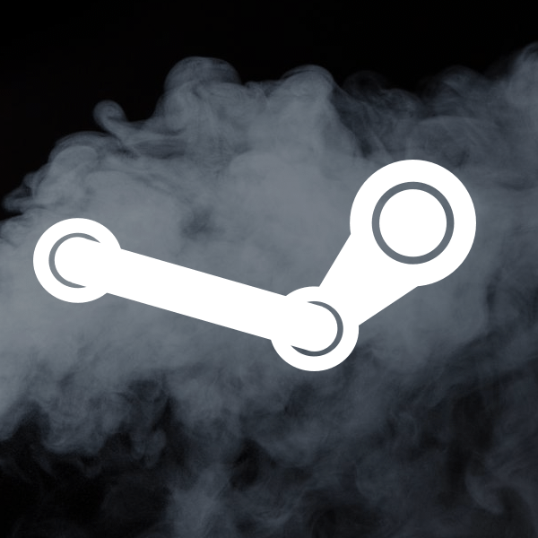
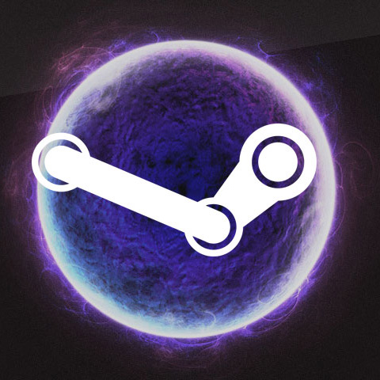

Steam Products
Click the images to see the products!
|  Steam is an Internet-based digital distribution platform developed by Valve Corporation offering digital rights management (DRM), multiplayer, and social networking. Steam provides the user with installation and automatic updating of games on multiple computers, and community features such as friends lists and groups, cloud saving, and in-game voice and chat functionality. |
Steam was created by a company called Valve. Valve is an American video game development and digital distribution company headquartered in Bellevue, Washington, United States. Due to the success of Steam and their peripheral products, Valve has shifted focus more on being a digital distributor rather than a game developing company. |
The main feature of Steam is the Steam Library. This is where users collect the games they have purchased from the online store. Due to Steam's cloud servers, users can play their games from any computer that they use. You could buy a game and play it on your home computer, or on your laptop when you travel. |
 Due to the success of Steam, Valve has decided to make peripheral devices. Their first was the Steam Controller, and it has a very unique design. Where most controllers would have joysticks on the left and right sides, the Steam Controller has touchpads on each side. Many users report that it is a very comfortable controller despite it's strange look. |
This is a prototype for Valve's Steam Machine; a computer/console created by Valve that houses their own SteamOS operating system. |
With the increasing popularity of in-home streaming, Valve has decided to create their own in-home streaming device called the Steam Link. The Steam Link allows users to stream their games from their computer directly to any TV in the house that the device is hooked up to. |
Along with Oculus Rift, and Sony's own VR headset, Valve and HTC's Vive will join the VR headset market. VIRTUAL REALITY! |
Valve has also partnered with other companies in creating the Steam Machine. Above is an Alienware version of the hardware. |
 And lastly, SteamOS: Valve's own operating system. It's supposed to be made primarily for gamers, but only time will tell if it will be a proper contender with Microsoft's Windows and Apple's OS. |
As you can see, Valve has become HUGE is the past couple of years. Their successful video game platform Steam has made them the dominant player in the online market and is already considered to be the video game equivalent of Amazon for PC games. Their success has even pushed them to experiment a bit. As you read this text, Valve is researching and developing their own operating system, console, controller, in-home streaming device, and a virtual reality headset! Valve is doing great and I can confidently say that they will be successful in the upcoming years.